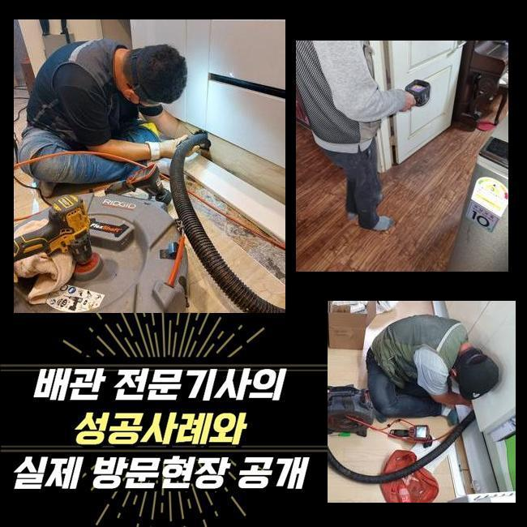
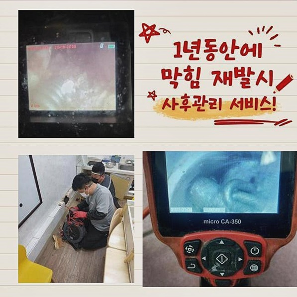
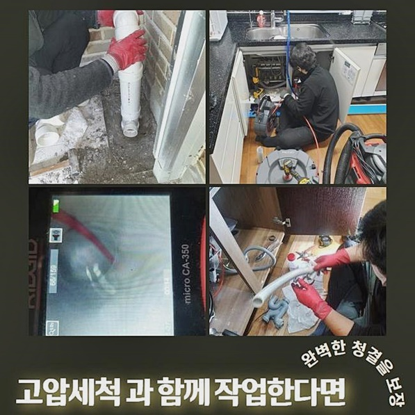
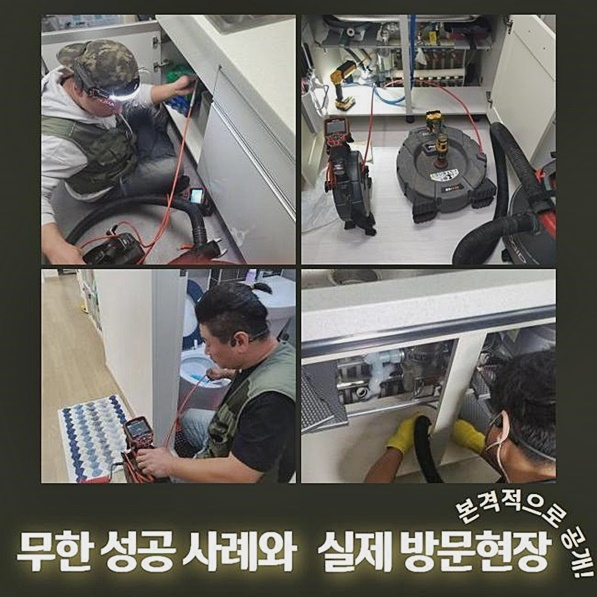
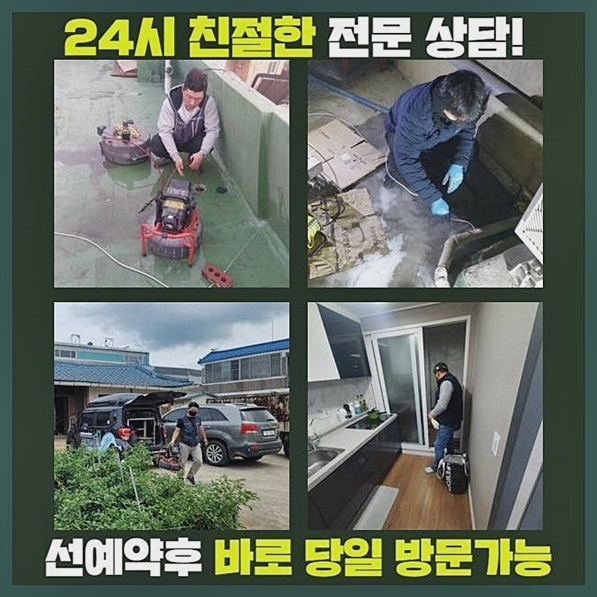
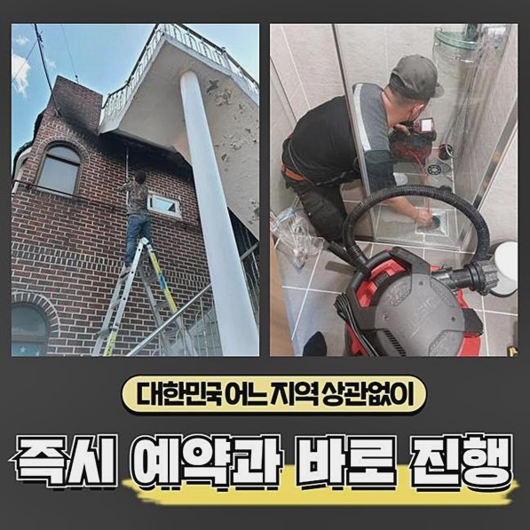
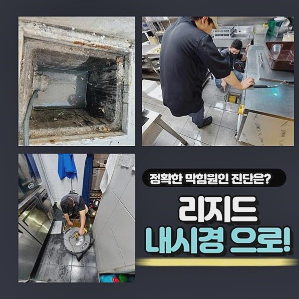

🏠 의정부 용현동대변기역류 가능동 하수구뚫는곳 배관전문
서울 동작구 변기막힘 전문 시공 후기

📋 작업 개요
- 위치: 서울 동작구, 동작구, 서울
- 서비스 유형: 변기막힘, 하수구막힘, 배관막힘, 누수수리, 역류해결, 뚫는업체, 배관청소, 고압세척, 설비공사
- 작업 일시: 2025. 3. 31. 12:36
- 업체명: 하수구수사대 (010-5615-2118)
🔍 문제 상황
동작구 상도동변기막힘 신대방동 배관내시경카메라 누수공사
욕실을갈때 이용했던물이 배수관아래쪽으로 원활하게 흘러가지못하고 배수구주위에 고여버린 경험이 있으실거에요
빈번하게 사용하다보니 그에맞도록 배수관이막혀 물이원활히 내려가지못하는 경우가많답니다
대체적인 경우에는 물빠짐이 점진적으로 더뎌지다 막힘증세가 심화된다면 배수구주위에 고이게되고 역류까지하기에 빨리 하수도막힘을 처리하는것이 바람직해요
하수도가 막히면 전조징후가 나타나는데 이점을빨리 인지못하면 현상이 심각해지므로 난해한 수리과정을 요구할수 있게됩니다
며칠전 내방해드린 현장의경우 욕실쪽이였는데 샤워기쪽에있는 하수구에서 배수흐름이 원할치않은 상황임을 확인할수가있었어요
물을하수구아래로 부어서 배수검사를 실시했는데 잘빠지는듯이 보이더니 점점고이면서 막히는문제가 나타났는데요
대다수의 화장실을 막혀버리게하는 주요원인은 씻을때 발생하게된 잔해물질이나 모발때문이에요

🔎 원인 분석
💡 전문가 진단: 정밀 진단 장비를 사용하여 슬러지의 고착 여부를 판명하고 타격/세척 작업을 실시했습니다.
자연스레 발현되는 문제이므로 이물이 빈틈없이 투입되는걸 막는다는것은 어려운일이지만 일상시에 하수관관리를 철저히한다면 방지할수있어요
먼저 막힌것을 해결해드리기위하여 배수구를분리한후 입구가나타나자 샤프트기기의 긴선을 아래쪽으로내려 잔여물분쇄를 진행할준비를 했습니다
하수관입구의 내벽부분에 쌓이게된 이물질들이 많았는데 분쇄기계를 통해서 배관안에 쌓이게된 석회물을 제거하기로했어요
화장실배관은 다른종류의 하수구들과 비교하면 배수구규격이 좁은구조이기에 오염물들이 유입이되면 막히는문제를 유발시킬수있어요
이물입자가 거대하지않아도 하수도내부에 쌓여서 뭉쳐진다면 배수가 고장나는문제를 발생시키게되는 원인이므로 조심해주시길 바래요
전면적인 배관청소에 돌입하여 기기를 동작시켜보니 얼마가지않아 석회물들이 제거되기 시작했죠
큰덩어리가 하수구안을 가로막는 상태였으므로 물을빠뜨려봐도 원활히 흘러가지않고 막히게된거에요
욕실하수도의 물빠짐이 이루어지는곳을 꽉막고있던 석회는제거했고 이젠 하수구내부를 뷰유하고있던 다양한이물을 없애고자 스케일링에 돌입했어요
고착물을제거하여 물빠짐이 정상적인 상태로 돌아올것을 예측했지만 재차욕실을 계속하여 이용하시면서 막힘문제가 재발하지않게 하기위해선 꼼꼼하게 작업과정에 착수해야합니다

🔧 작업 과정
분쇄장비를 활용하여 분해작업이 끝났다고해도 배수구세척이 종료된게 아니랍니다
오염물을조각내어 분쇄해내는 과정으로 이루어지므로 잔해물질들이 배수구안에 남아있는채로 고여버린답니다
이런잔여물까지 깔끔히 없애야지만 같은문제로 막히게되는것을 방지할수있죠
석션기기로 남아있는 잔여물질을 빨아들여주었고 고인물과함께 분쇄가루들이 석션통에 제거된걸 체크할수있었죠
석션과정을 진행한후 추가로 다른작업이 필요한부분은 없는지 체크해보고자 하수구카메라로 검수해봤어요
전체적으로 이물질들이 어느정도로 없어진것을 확인했지만 하수구깊숙한곳에 굳은상태로있는 이물질일부가 남아있는걸 살펴볼수가 있었답니다
너무깊숙한곳에 위치해있어서 장비를투입해서 강력한 자극을주었다간 배관크랙이 발생할수있으므로 다른방법도 생각하고있어야해요
하수도내부로 용액을주입하여 고착물질들이 중화되게끔 대기한뒤 부드럽게녹으면 이때제거를 착수하고자하는 수립계획을 세웠어요
용액을하수구로 주입하고나서 5분정도 대기하고난후 재차 스케일링에 돌입하게되었고 쌓여있던이물이 제거된걸 보았습니다
마치고나서 오염물질이 보이지않았기에 세척을 마칠수있었고 하수도를 들여다봤더니 막힌것없이 배관벽도 깔끔했는데요
막혀서고였던 하수들도 배수되어 배수구입구주위에 차올랐던물도 흘러간상태로 파악되었어요
모든과정을 시마이하고 배수구주변을 깨끗히 정리한후 청소가끝났죠
마지막으로 고객님과 함께 배수구 아래로 물을 부어 배수 테스트를 실시해 보니 고이는 현상 없이 아주 시원하게 배수가 되는 것을 확인할 수 있었습니다


✅ 작업 완료
막힘문제를 발현시키는 이물이 투입되지않는게 가장 중요한요소지만 갑자기 이물로인하여 막힌경우라면 빠른조치로 처리해보는것이 해결책이라고 말씀드릴수있어요
저희들에게 맡겨서 하수구를 뚫어보신다면 신뢰에 보답할수있도록 성공하는결과물로 나타내도록 할게요!
대한민국의 지역이라면 1시간안으로 출동이가능하며 투명하게 작업과정을 안내드리니 염려마세요!
이것외에도 궁금한게 있으실경우 마음편히 연락주신다면 친절한상담으로 맞이해드릴테니 염려치마세요!




⚠️ 베란다 누수 및 방수 관리 방법
- ✅ 비가 많이 올 때 창틀 주변이나 아래층 천장에 얼룩이 생기는지 정기적으로 확인해 보세요.
- ✅ 우수관 주변 실리콘 마감이 들뜨거나 깨진 틈새가 있는지 손상 여부를 수시로 체크하세요.
- ✅ 베란다 바닥 타일의 줄눈(메지)이 소실되면 그 틈으로 물이 침투하여 누수가 유발됩니다.
- ✅ 누수 의심 증상 발견 시 방치하면 아래층 손실이 커지므로 즉시 전문가의 진단을 받으십시오.
💡 핵심 정리
- 확실한 장비 작업(내시경 점검 및 샤프트 스케일링)으로 원인을 뿌리 뽑습니다.
- 작업 후 1년 이내에 동일한 부위 재발 시 100% 무상 A/S 서비스를 보장합니다.
- 서울 · 경기 · 인천 전 지역에 24시간 언제든 긴급 출동할 수 있도록 항시 대기 중입니다.
❓ 자주 묻는 질문 (FAQ)
🚨 서울 동작구 변기막힘 문제로 고민이신가요?
정확한 원인 진단과 확실한 시공으로 재발 없는 해결을 약속드립니다.
24시간 긴급 출동 | 서울 · 경기 · 인천 전지역 | 1년 내 재발 시 무상 A/S